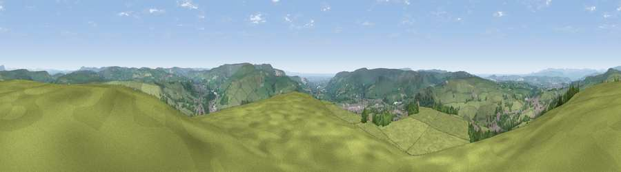

Viewpoint near Haslingden
#6303 in England · top 5% of its area beats it · near HaslingdenWhere it is
The exact computed spot (SD 79925 24025). Click the marker for map links.
The view, rendered

A 360° render of this exact spot computed from the terrain model, tree cover and land cover — summer colours, afternoon light, calibrated against photographs of famous viewpoints. Real trees, hedges and buildings will differ in detail.
The panorama
Grey silhouette: terrain skyline in each direction (720 bearings, Earth curvature and refraction included). Dashed green: skyline with trees (+15 m) and buildings (+8 m) as obstacles. Blue strip: how far the ground is visible on each bearing.
Where the view opens
Wedge length = distance to the farthest visible ground on that bearing (vegetation-aware). Rings at 10, 25 and 50 km.
What fills the view
81% grassland · 13% woodland · 6% built-up
Angular shares of the visible panorama (visual magnitude), not map area. Landscape diversity 0.27 (0–1 Shannon).
Key numbers
More beautiful places nearby
The staircase of upgrades: each row has a higher view potential than everything closer. Driving times are estimates from straight-line distance, calibrated against real road routing — check an actual route before setting out.
| Place | Direction | Drive | Score |
|---|---|---|---|
| Great Hameldon | N · 5 km | ~11 min | 74.2 |
| Viewpoint near Edenfield | SSE · 6 km | ~12 min | 77.5 |
| Darwen Hill | WSW · 12 km | ~23 min | 80.7 |
| White Brow | SW · 18 km | ~31 min | 82.9 |
| Warton Crag | NNW · 58 km | ~80 min | 83.2 |
| Viewpoint near Grange-over-Sands | NW · 68 km | ~91 min | 83.4 |
| Viewpoint near Cartmel | NW · 71 km | ~94 min | 87.0 |
| Viewpoint near Cartmel | NW · 71 km | ~94 min | 87.2 |
53.71225, -2.30563 · source: screening · position refined by local search. Computed location — check access rights before visiting.